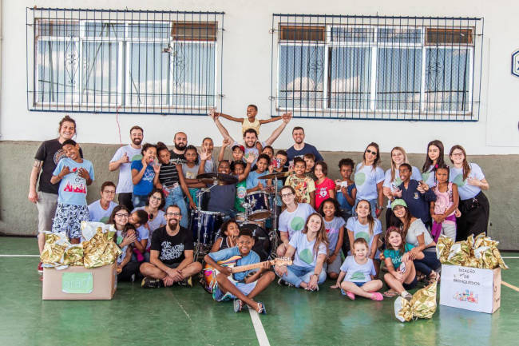

Canais Oficiais
E-mail: contato@ongtransformar.org
Telefone: (61) 99999-9999
Endereço: Rua da Solidariedade, 123 - Brasília, DF
Somos uma organização não governamental dedicada a apoiar comunidades em situação de extrema vulnerabilidade social, promovendo inclusão, projetos educacionais e apoio humanitário.
Quero Ajudar
Tem alguma dúvida ou quer conhecer nossa sede? Fale com a nossa equipe:
E-mail: contato@ongtransformar.org
Telefone: (61) 99999-9999
Endereço: Rua da Solidariedade, 123 - Brasília, DF